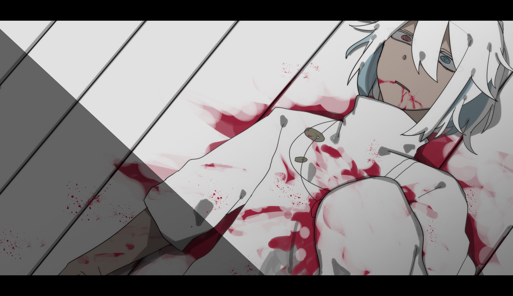
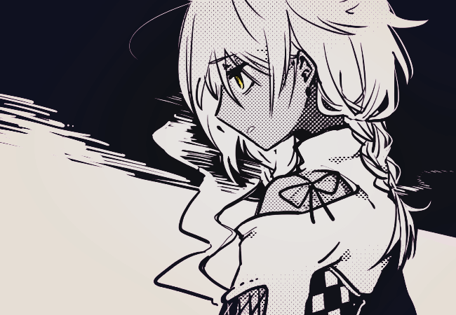
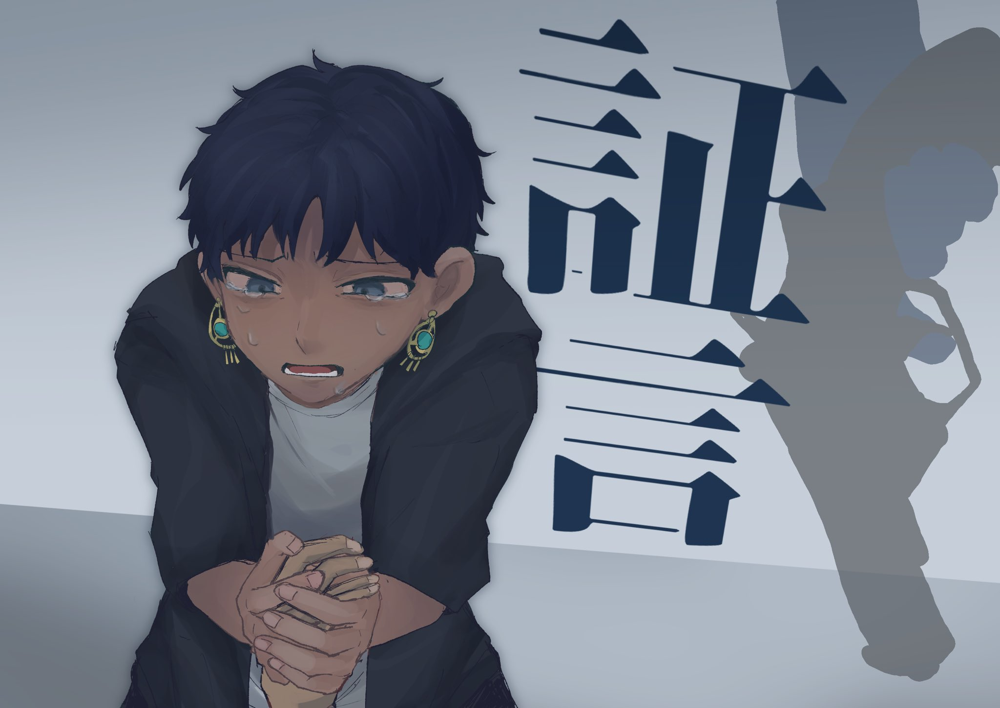
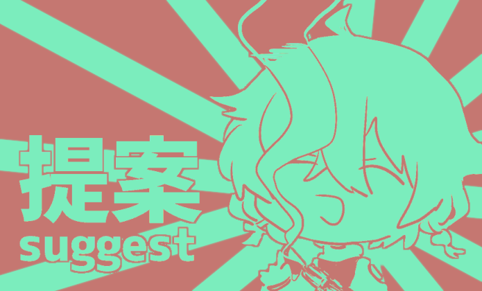
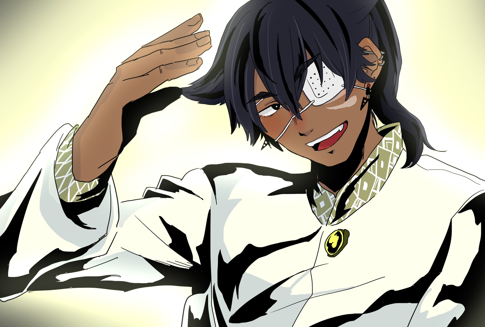
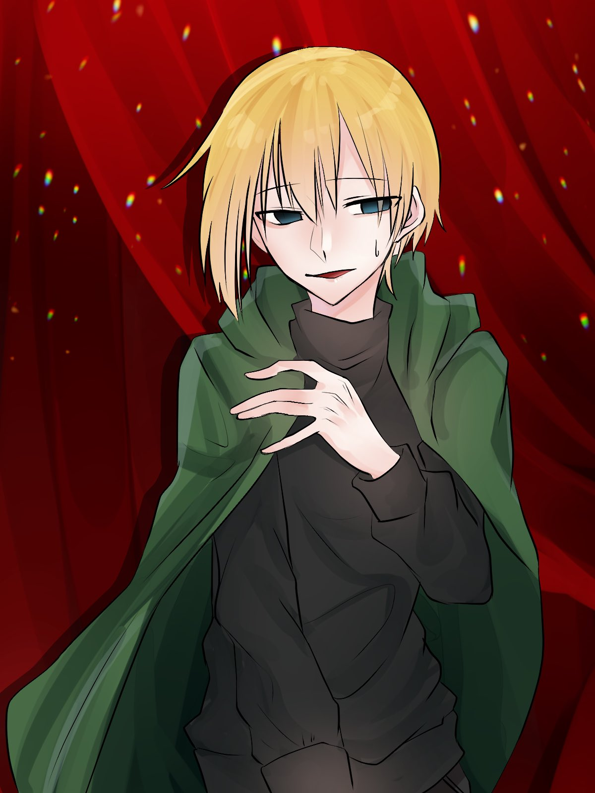
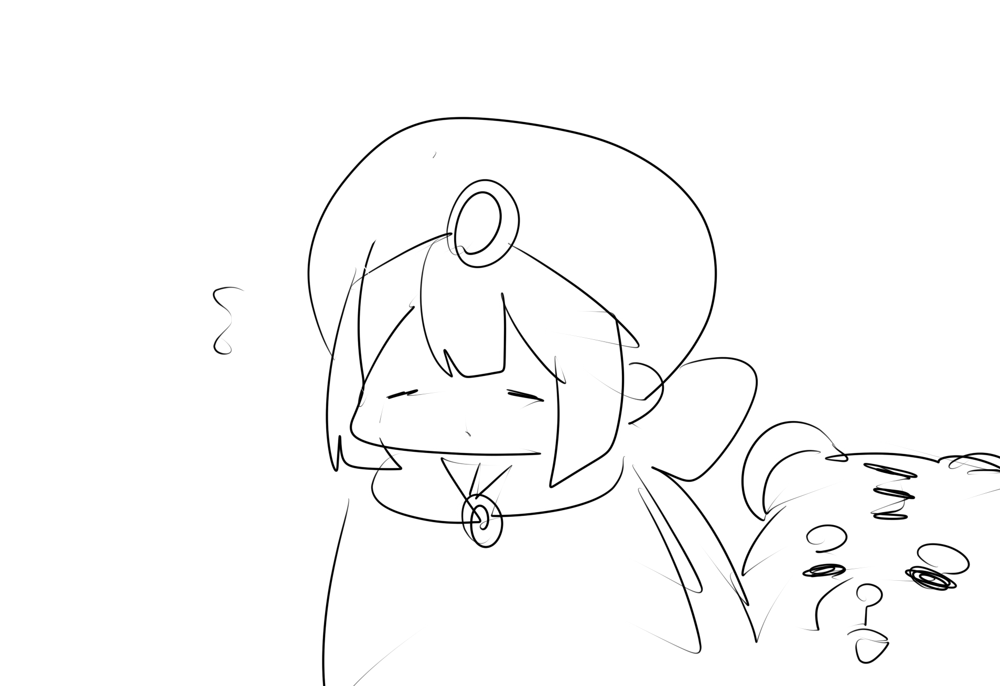
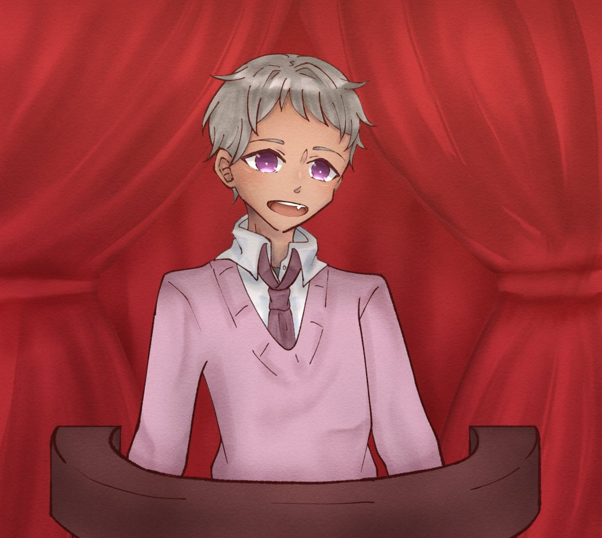
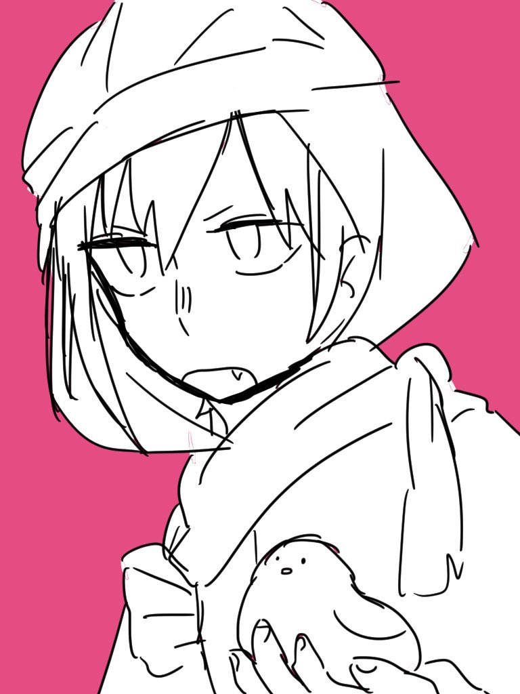
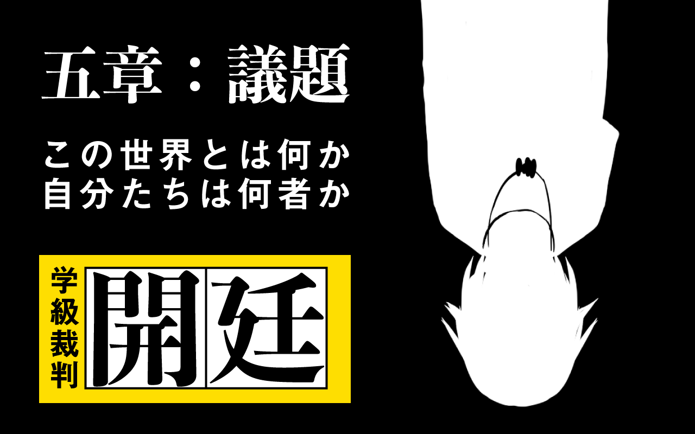

＊死亡した生徒の絵本を見てから数日。そろそろ、あの白黒の象が動機とやらを持ってくるだろうと誰もが思っている頃
＊唐突に
＊銃声が響き渡る
＊その瞬間、世界が変わったのを感じた
＊さっきまでそこにいたモノガネの友達が消えている。どこにもいない
＊微かに流れていた風がぴたりと止んだ。冷蔵庫の雑音も聞こえない
＊校内放送。加工された声だ。
「ハローワールド」
「ありがとう、ラーフル。この世界のみんな、初めまして。それから…この中の一人に対しては、久しぶり。元気にしてた？」
「俺は……まあ、精霊とでも呼んでよ。ラーフルが俺のことをそう呼ぶんだ」
「番組のスタッフには申し訳ないけど、ここからは俺らがこの世界を仕切らせてもらうことになった。結末を変えようと思う」
「君たちのいる世界に、この世界の真実につながるヒントをばらまいておいた。コトダマってやつだね。次の裁判までに調べておいて。こっちもそれまでに準備を進めておく」
「モノガネはしばらく戻らないよ。コロシアイは終わった。正確には終わってないが、終わったことにしよう。うん、終わった」
「モノガネ以外の神はこのあと戻しておく。実装したの俺なんだよね。1時間くらいで戻せると思う。捜査に行き詰まったら神たちに話しかけてみるといいんじゃない？」
「俺からは以上。あとは君たち次第。じゃあね」
＊プツン、と回線が切れる音がする
＊放送が終わった直後、
シン｢ねぇ……ねぇ！！！！！！聞こえてる！？｣
シン｢返事してってば！！！おい！！！｣
＊シンの声が聞こえる。銃声が聞こえた方からだ
シン｢…………何、で………？ねぇ……｣
シン｢ねぇってばぁ！！！！！！！｣
シン｢何でだよ！！何とか言えって！！！！！｣
＊シンの声が聞こえる。ずっと、ずっと。泣いているような、怒っているような、戸惑っているような声が
シン｢お前、マジでふざけんなよ………！！！！｣
＊声の元に集まった生徒たちは目の前の景色に息を飲む
＊叫んでいる彼の前には
＊真っ白な衣服を真っ赤に染めたekと

＊それからもう一人、リボルバーを握りしめたままの……

【a 証言】シン
モノガネの部屋を調べようと侵入したところ、エクが来て声をかけられた。その直後にやってきたラーフルが突然、エクを撃った。

【b 自白】ラーフル
自分がエクを撃った。精霊に指示されてしたことだ。
「……何を吹き込まれたにせよ、つまるところは俺がやろうと思ってやったんだけどさあ」
【c 提案】ラーフル
精霊は俺たちを助けてくれるらしい。放送で言われた通りコトダマを集め、次の裁判に臨もう。

＊ピピッ
ラーフル「頼むから言うことを聞いてくれないかな…… 人の形をしたものを撃つのはあんまり気分がいいもんじゃない」
精霊「あっ しんみりしてるところごめん。神の復旧が済んだから戻すね」
＊【世界に神々が戻ってきました】
ラーフル「俺たちが全貌を明らかにしさえすれば、今回のことだってそんなにしんみりするようなことじゃないんだよ！ だから情報集めがんばろ！ ねっ？」
精霊「あんまりラーフルを責めないで。俺が頼んだことなんだ。大丈夫大丈夫、悪いようにはしないから。みんなも知ってるでしょ？印度人は絶望しない」
精霊「シン君ごめんね。でもこれ、君が用意してくれた台本なんだよ」
シン｢…………………え？｣
精霊「何か聞きたい事があったら、この部屋…モノガネの部屋に来て。なんでも話そう。ああ、ここじゃなくてもいいか。なんというか…念を送ってくれればなんとなく返事する」
精霊「じゃ。とりあえずこの場はこれで。流石に番組スタッフが動き始めた。まずはそっちに話つけなきゃ」

精霊「そろそろ時間だね。こっちの準備は整ったみんな、裁判場に集まって。 扉は開けておいた。踊らなくても入れるよ」
精霊「うっかり句点を打ち忘れたよ。ああ、神もそれぞれの持ち場についててね。合図があるまではそのままで」
＊7人の生徒と、愉快な神々たちがそれぞれ自分の持ち場へ足を運んだ。
裁判長の席には誰もいない。
＊そこに、“精霊”の声が響く。
「みんな、集まってくれてありがとう。顔が暗いね。元気出していこう。ほら、神たちはみんな元気だよ」
「今回の裁判は長引くだろうし、もったいぶっても仕方ないね。よし、始めよう」
＊すると、場内に軽快なミュージックが流れ出す。いなくなった級友を思うと踊る気持ちになんかなれない。
＊踊る気持ちになんかなれない。なれるわけがない。
＊数秒前なら、そう思ったかもしれない
「雰囲気が変わってる人もいるから、念のため名前を言って登場して」
プレム「よっ！みんな！ 元気にしてたか？」

プレム「ああ、名前を言うんだったな。俺はプレム・アイアンガー。みんなの担任だ！」
カルロ・フーゴ｢や、やぁ……久しぶり……カルロ……もとい、フーゴ……ええと……戻ってきちゃった、よ｣

リナ「みなさん…！！お久しぶりですね……！！！！(ちら、と出て来て、ぱっと笑って)」
クリシュナ「ナマステ・・・(しおしおした顔でおずおず出てくる)」

コマチ「久しぶりだね、みんな！」

カマル「安心しろ ここにインコちゃんもいる」

パラヴィ「おひさ、……いえ…はじめまして…？なんでしょうか……(お辞儀して静かに席に着く)」
モハメド「本物か？本物でいいのか？」
精霊「本物といえば間違いなく本物なんだ。しかしその、本物かと言う問いに対しての答えが君たちにとって少し酷かもしれないまああとで読む印度むかしばなしでほぼこの答えがでるわけだが」
精霊「よし、みんな揃ったね。そうだ、俺の自己紹介がまだだったな」
精霊「俺はラーフル。ラーフル・マニ。この裁判の進行役を務めます。よろしく」
bot/ラーフル「それじゃあ、始めよう」
＊五章：学級裁判 開廷

bot/ラーフル「まずはこの世界についての盛大なネタバレを俺から話そう」